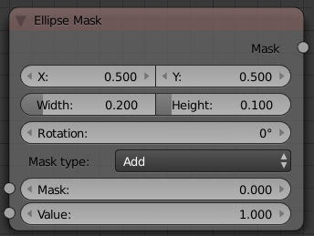

Ellipse Mask Node¶

{kind=link}
Ellipse Mask Node.
The Ellipse Mask node creates an image suitable for use as a simple matte or vignette mask.
Inputs¶
- Mask
- An optional mask to use as the base for mask operations.
- Value
- Intensity of the generated mask.
Properties¶
- X, Y
- Position of the center of the ellipse as a fraction of the total width or height. (0.5, 0.5 creates a centered ellipse; 0.0, 0.0 creates an ellipse with its center in the lower left).
- Width
- Width of the ellipse as a fraction of the total image width.
- Height
- Height of the ellipse as a fraction of the total image width, not height. Equal Width and Height values with produce a circle.
- Rotation
- Rotation of the ellipse around its center point.
- Mask Type
Operation to use against the input mask.
- Add
- This yields the union of the input mask and the generated mask: Areas covered by the generated mask are set to the specified Value. Other parts of the input masked are passed through unchanged, or set to black if there is no input mask.
- Subtract
- Values of the input mask have the specified Value subtracted from them.
- Multiply
- This yields the intersection of this generated mask and the input mask: Values of the input mask are multiplied by the specified Value for the area covered by the generated mask. All other areas become black.
- Not
- Any area covered by both the input mask and the generated mask becomes black. Areas covered by the generated mask that are black on the input mask become the specified Value. Areas uncovered by the generated mask remain unchanged.